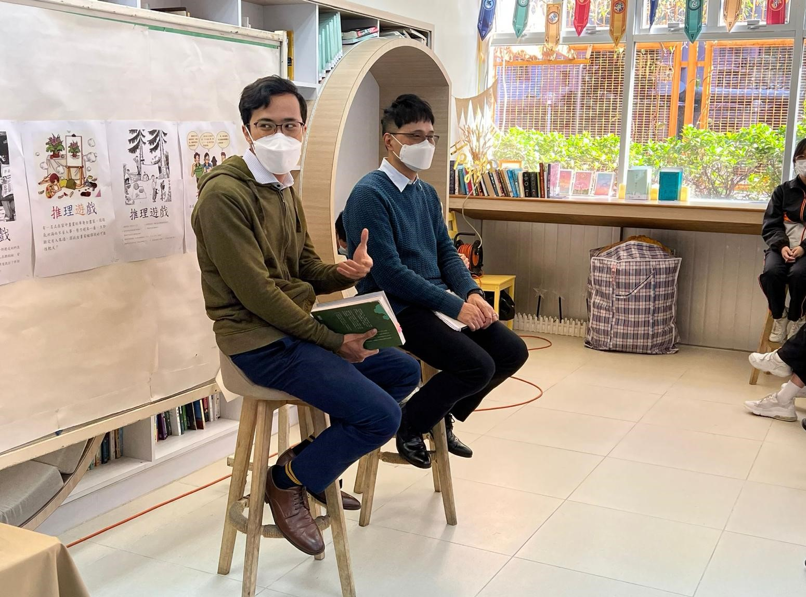
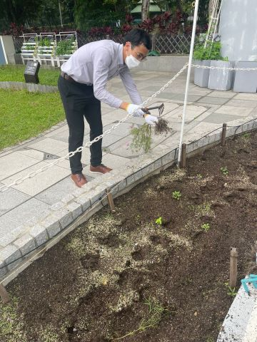

Home
My Travels
Hi, I'm Geographer Luk.
A student who happens to be a teacher.
As a teacher...
I love to share.

I love to grow with students.

I also love to travel! Click on "My Travels" at the top of the page to find out!